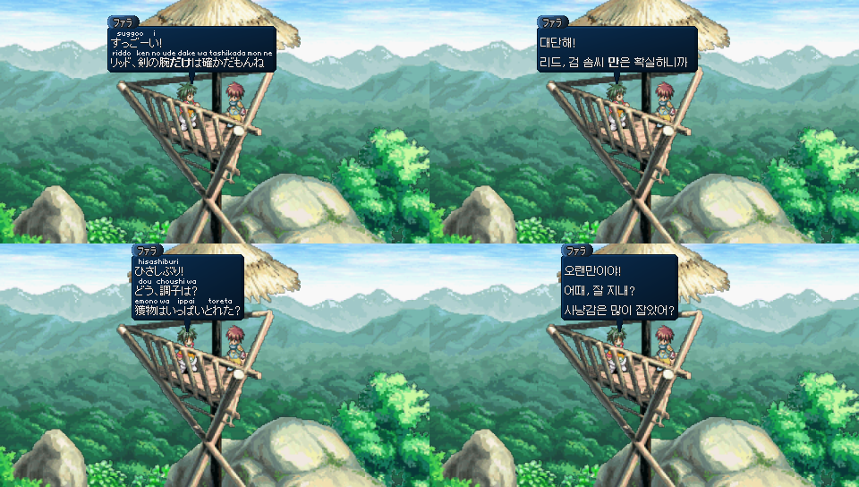
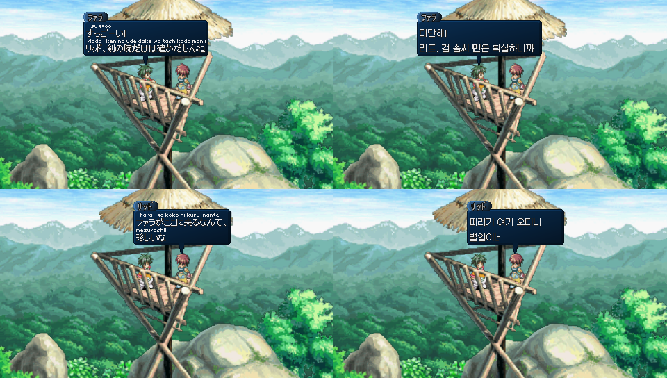
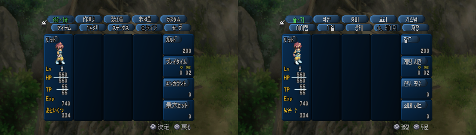
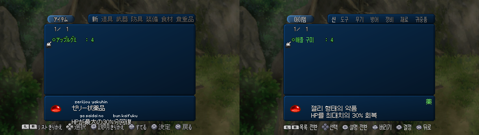
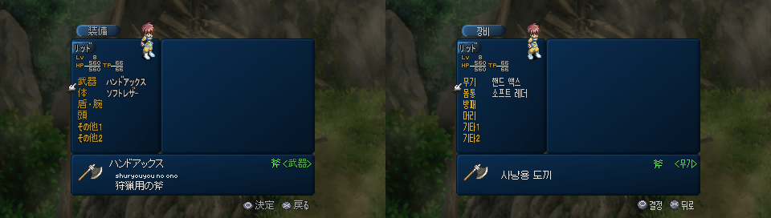
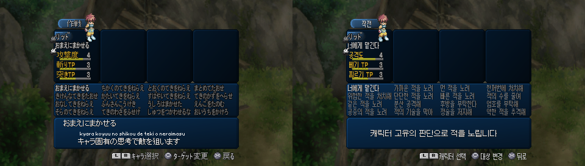
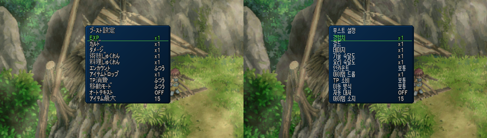
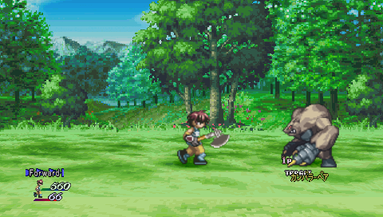
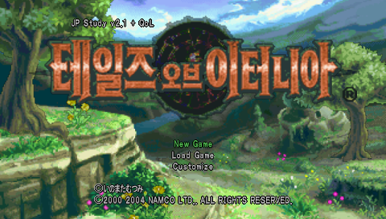

무엇이 바뀌나
| 대사 | 모든 장면 대사가 일본판 원문으로 나오고, 대사창은 줄마다 로마자 띠를 넣을 수 있게 조금 커집니다. L을 누르고 있으면 같은 페이지가 한국어로 바뀝니다. 대사 안의 캐릭터 이름(リッド, ファラ 등)도 일본어 원문을 따릅니다. |
|---|---|
| 메뉴·아이템 | 메뉴, 아이템·장비 이름, 지도 지명 등 화면 글자가 모두 일본어로 나옵니다. L을 누르고 있으면 한글판 화면으로 바뀝니다. |
| 설명란 | 아이템·장비·작전 메뉴의 설명문 위에도 로마자가 붙고, L로 한국어 설명을 볼 수 있습니다. |
| 전투 | 적 이름과 전투 데이터 글자가 일본어로 나오고, L을 누르면 한국어 이름으로 바뀝니다. |
| 부스트 메뉴 | L+R 부스트 메뉴는 일본어 문구(EXP, ガルド, ダメージ …)로 바뀌었고, L을 누르고 있으면 기존 한국어 문구가 나옵니다. 기능과 배율은 편의·부스트 패치 v1.1과 같습니다. |
로마자 표기
- 헵번식을 바탕으로 단어마다 띄어 씁니다. 예:
dou choushi wa,emono wa ippai toreta. - 조사 は·へ·を는 발음대로
wa·e·o로 적고, 긴소리는 모음을 겹쳐 적습니다(suggoo,paatii). 동사·형용사 뒤의 활용 어미는 앞말에 붙여 한 단어로 적습니다(toreta). - 읽기는 형태소 분석기(MeCab 계열 fugashi + UniDic)로 문맥에 맞게 정했고, 晶霊(
shourei), 大晶霊(daishourei), 晶霊術(shoureijutsu) 같은 게임 고유어는 따로 읽기를 넣었습니다. - 대사 약 1만 3천 페이지에 로마자가 들어갑니다. 일부 읽기는 분석기가 틀릴 수 있습니다.
버튼
| L (누르고 있는 동안) | 한국어 보기. 떼면 일본어로 돌아옵니다. PSP에는 L2/R2가 없어서 대화 중에 쓰지 않는 L을 골랐습니다. |
|---|---|
| L+R | 부스트 메뉴 (필드·월드맵). |
| R | 필드 빠른 이동, 이벤트 대사 빨리 넘기기 (편의·부스트 패치와 같음). |
L만 누르면 그 입력은 게임에 전달되지 않습니다. 그래서 메뉴에서 L로 앞 탭으로 넘기기는 되지 않고, R로 넘기는 것은 그대로 됩니다.
화면
두 장이 나란히 있는 그림은 왼쪽이 기본 화면(일본어+로마자), 오른쪽이 L을 누른 화면(한국어)입니다. 그림을 누르면 크게 볼 수 있습니다.









적용 방법
한글판 ISO 준비
일본판 ISO(ULJS-00015, 880,607,232바이트, CRC32
4129997D)에 한글패치 V1.2를 먼저 적용합니다. 결과 ISO는 899,168,256바이트, CRC3246FF65AF여야 합니다. 이 학습판은 한글패치의 번역문과 한글 글꼴을 그대로 써서 L 한국어 보기를 만들기 때문에, 한글판 ISO가 꼭 필요합니다.이 패치 적용
한글판 ISO에
ToE_PSP_KR1.2_JPStudy_v2.1.xdelta를 xdelta로 적용합니다. PC에서는 Delta Patcher나 xdelta3(xdelta3 -d -s 한글판.iso 패치.xdelta 결과.iso)를 쓰면 됩니다. 결과 ISO는 900,784,128바이트, CRC329ACA1CC2입니다.실행
PPSSPP에서 실행합니다. 게임 목록에 「Tales of Eternia JP Study v2.1」로 나오고, 타이틀 화면 왼쪽 위에 「JP Study v2.1 + QoL」이 보이면 제대로 적용된 것입니다. 새 게임으로 시작하는 것을 권합니다 (아래 알려진 문제 참고).
이 xdelta는 한글패치 V1.2를 적용한 ISO용입니다. 편의·부스트 패치(v1.0/v1.1)를 적용한 ISO나 일본판 원본 ISO에는 맞지 않습니다. 편의·부스트 기능은 이 패치에 이미 들어 있습니다.
알려진 문제
- 한글판에서 만든 세이브를 불러오면 캐릭터 이름이 한국어로 저장되어 있어, 대사 속에 이름이 들어간 페이지에는 로마자가 붙지 않습니다. 새 게임으로 시작하면 이름이 일본어 원문(リッド 등)으로 들어갑니다.
- 메뉴 항목 이름 목록과 전투 화면 글자에는 로마자가 없습니다. 메뉴 글꼴에 한자가 189자뿐이고 줄 사이에 여백이 없어서 넣지 못했습니다. 일본어 표시와 L 한국어 보기는 됩니다.
- 2줄짜리 아이템 설명을 볼 때는 설명란 맨 윗줄(아이템 이름 자리)에 로마자가 들어갑니다. 아이템 이름은 위쪽 목록에서 볼 수 있습니다.
- 속성+晶霊 조합(風晶霊 등)은 공식 읽기를 확인하지 못해 사전 기본 읽기를 따랐습니다(예:
kaze shourei). - 시스템 메시지처럼 아이템 이름이 끼워 들어가는 문장은 로마자가 붙지 않을 수 있습니다.
- PPSSPP에서만 시험했습니다. 실기(커스텀 펌웨어 PSP)와 후반 지역·보스전은 끝까지 확인하지 못했습니다. 이상한 점이 있으면 제보해 주세요.
바뀐 점
- 아이템·장비·작전 설명란에 로마자 추가, L로 한국어 설명 보기
- 메뉴에서 L을 눌러도 탭이 넘어가지 않게 함
- 대사·메뉴·아이템·전투 일본어 원문 복원, 대사 로마자 발음, L 누르는 동안 한국어 보기
- 편의·부스트 패치 v1.1 기능 포함, 부스트 메뉴 일본어 문구
어셈블러: armips. 로마자 읽기: fugashi + UniDic. 분석·검수: PPSSPP.